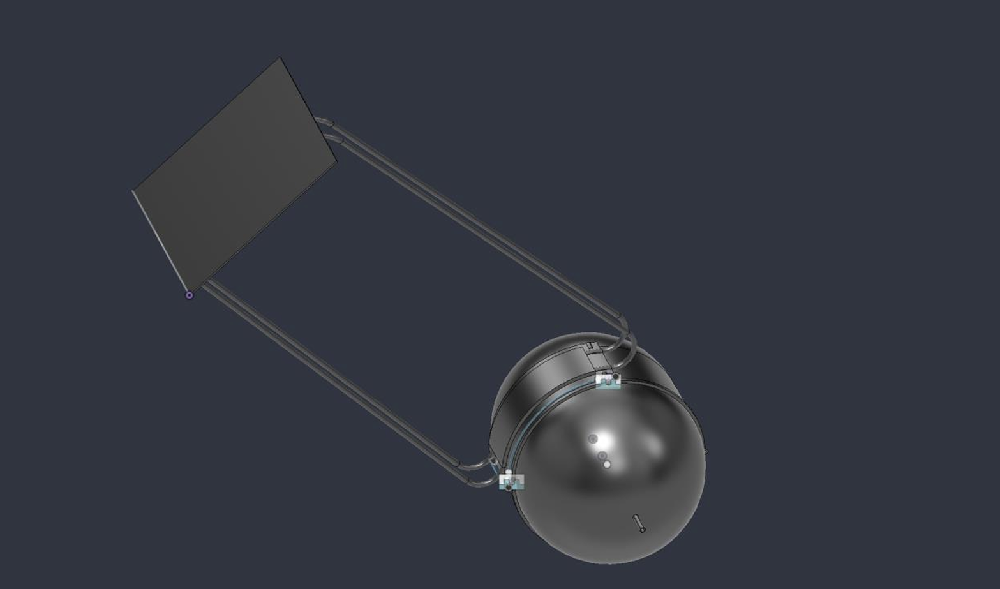

Hydrogen Peroxide Tank
Thermal Management
A passive cooling concept connecting a spacecraft propellant tank to an external radiator through an aluminum saddle and heat pipes.
- Fusion 360
- Excel
- Heat transfer
Read project
During my summer internship at Manastu Space Technologies, I worked on a passive cooling concept for a spacecraft's hydrogen-peroxide propellant tank. The goal was to move heat from the tank to an external radiator while keeping the propellant within its required temperature range.
I started by sizing the tank from the usable propellant requirement and blowdown conditions, then built the assembly in Fusion 360. I used rounded ends and a cylindrical middle section to leave room for mounting and thermal contact. An aluminum saddle collected heat from the tank, and heat pipes carried it to the radiator through a removable mechanical interface.
To assess the design, I calculated heat transfer through the tube connections and radiation between the tank and surrounding spacecraft surfaces. I also considered sunlight and Earth radiation at the external radiator. A thermal-resistance model helped me trace the full heat-transfer path and see how geometry, contact area, and interface materials affected the temperature difference.
The result was a CAD concept and technical report that supported preliminary hot-case feasibility. Hardware performance and cold-case control still needed further verification. This project gave me experience turning thermal calculations into a mechanical design and identifying which assumptions needed to be checked next.